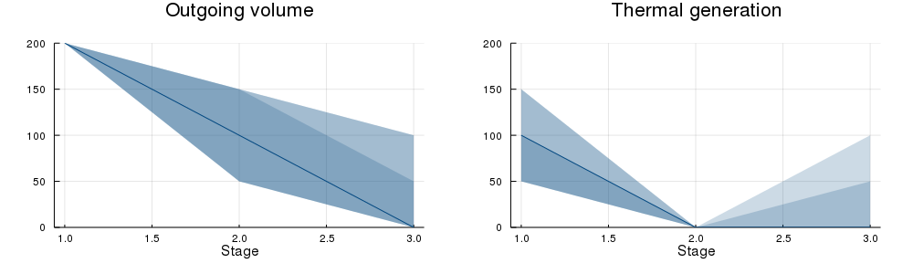

Basic V: plotting
In our previous tutorials, we formulated, solved, and simulated multistage stochastic optimization problems. However, we haven't really investigated what the solution looks like. Luckily, Kokako.jl includes a number of plotting tools to help us do that. In this tutorial, we explain the tools and make some pretty pictures.
Preliminaries
First, we need to create a policy and simulate some trajectories. So, let's take the model from Basic IV: Markov uncertainty, train it for 20 iterations, and then simulate 100 Monte Carlo realizations of the policy.
using Kokako, GLPK
Ω = [
(inflow = 0.0, fuel_multiplier = 1.5),
(inflow = 50.0, fuel_multiplier = 1.0),
(inflow = 100.0, fuel_multiplier = 0.75)
]
model = Kokako.MarkovianPolicyGraph(
transition_matrices = Array{Float64, 2}[
[1.0]', [0.75 0.25], [0.75 0.25 ; 0.25 0.75]],
sense = :Min, lower_bound = 0.0,
optimizer = with_optimizer(GLPK.Optimizer)
) do subproblem, node
t, markov_state = node
@variable(subproblem, 0 <= volume <= 200, Kokako.State, initial_value = 200)
@variable(subproblem, thermal_generation >= 0)
@variable(subproblem, hydro_generation >= 0)
@variable(subproblem, hydro_spill >= 0)
@variable(subproblem, inflow)
@constraint(subproblem,
volume.out == volume.in + inflow - hydro_generation - hydro_spill)
@constraint(subproblem, thermal_generation + hydro_generation == 150.0)
probability = markov_state == 1 ? [1/6, 1/3, 1/2] : [1/2, 1/3, 1/6]
fuel_cost = [50.0, 100.0, 150.0]
Kokako.parameterize(subproblem, Ω, probability) do ω
JuMP.fix(inflow, ω.inflow)
@stageobjective(subproblem,
ω.fuel_multiplier * fuel_cost[t] * thermal_generation)
end
end
Kokako.train(model, iteration_limit = 20)
simulations = Kokako.simulate(
model, 100,
[:volume, :thermal_generation, :hydro_generation, :hydro_spill])
println("Completed $(length(simulations)) simulations.")
# output
———————————————————————————————————————————————————————————————————————————————
Kokako - © Oscar Dowson, 2018-19.
———————————————————————————————————————————————————————————————————————————————
Iteration | Simulation | Bound | Time (s)
———————————————————————————————————————————————————————————————————————————————
1 | 33.750K | 5.329K | 0.034
2 | 5.000K | 7.975K | 0.036
3 | 13.125K | 8.073K | 0.038
4 | 5.000K | 8.073K | 0.039
5 | 1.875K | 8.073K | 0.041
6 | 1.875K | 8.073K | 0.042
7 | 16.250K | 8.073K | 0.044
8 | 1.875K | 8.073K | 0.045
9 | 1.875K | 8.073K | 0.048
10 | 1.875K | 8.073K | 0.049
11 | 1.875K | 8.073K | 0.051
12 | 1.875K | 8.073K | 0.053
13 | 33.750K | 8.073K | 0.054
14 | 9.375K | 8.073K | 0.056
15 | 5.000K | 8.073K | 0.059
16 | 5.000K | 8.073K | 0.061
17 | 11.250K | 8.073K | 0.063
18 | 5.000K | 8.073K | 0.065
19 | 1.875K | 8.073K | 0.066
20 | 11.250K | 8.073K | 0.069
Completed 100 simulations.Great! Now we have some data in simulations to visualize.
Spaghetti plots
The first plotting utility we discuss is a spaghetti plot (you'll understand the name when you see the graph).
To create a spaghetti plot, begin by creating a new Kokako.SpaghettiPlot instance as follows:
julia> plt = Kokako.SpaghettiPlot(simulations)
A spaghetti plot with 100 scenarios and 3 stages.We can add plots to plt using the Kokako.add_spaghetti function.
julia> Kokako.add_spaghetti(plt; title = "Reservoir volume") do data
return data[:volume].out
endYou don't have just return values from the simulation, you can compute things too.
julia> Kokako.add_spaghetti(plt;
title = "Fuel cost", ymin = 0, ymax = 250) do data
if data[:thermal_generation] > 0
return data[:stage_objective] / data[:thermal_generation]
else # No thermal generation, so return 0.0.
return 0.0
end
endNote that there are many keyword arguments in addition to title. For example, we fixed the minimum and maximum values of the y-axis using ymin and ymax. See the Kokako.add_spaghetti documentation for all the arguments.
Having built the plot, we now need to display it.
julia> Kokako.save(plt, "spaghetti_plot.html", open = true)This should open a webpage that looks like this one.
Using the mouse, you can highlight individual trajectories by hovering over them. This makes it possible to visualize a single trajectory across multiple dimensions.
If you click on the plot, then trajectories that are close to the mouse pointer are shown darker and those further away are shown lighter.
Publication plots
Instead of the interactive Javascript plots, you can also create some publication ready plots using the Kokako.publication_plot function.
!!!info You need to install the Plots.jl package for this to work. We used the GR backend (gr()), but any Plots.jl backend should work.
Kokako.publication_plot implements a plot recipe to create ribbon plots of each variable against the stages. The first argument is the vector of simulation dictionaries and the second argument is the dictionary key that you want to plot. Standard Plots.jl keyword arguments such as title and xlabel can be used to modify the look of each plot. By default, the plot displays ribbons of the 0-100, 10-90, and 25-75 percentiles. The dark, solid line in the middle is the median (i.e. 50'th percentile).
using Plots
plot(
Kokako.publication_plot(simulations, title = "Outgoing volume") do data
return data[:volume].out
end,
Kokako.publication_plot(simulations, title = "Thermal generation") do data
return data[:thermal_generation]
end,
xlabel = "Stage",
ylims = (0, 200),
layout = (1, 2),
margin_bottom = 5,
size = (1000, 300)
)This should open a plot window with a plot that looks like:

You can save this plot as a PDF using the Plots.jl function savefig:
Plots.savefig("my_picture.pdf")This concludes our fifth tutorial for Kokako.jl. In our next tutorial, Basic VI: words of warning we discuss some of the issues that you should be aware of when creating your own models.